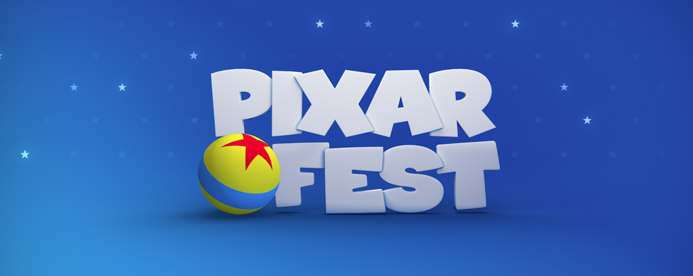
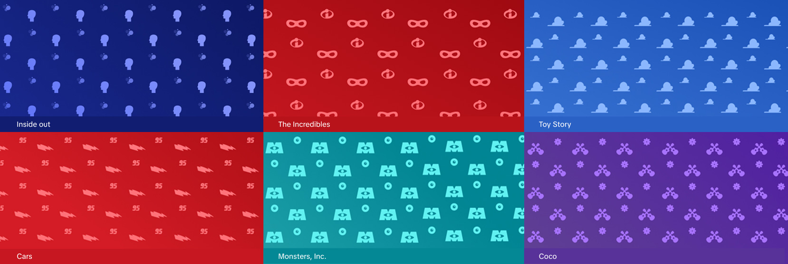

A Pixar film marathon aired on Disney Channel, featuring a curated selection of Pixar movies presented as a special programming event.
A Pixar film marathon aired on Disney Channel,
featuring a curated selection of Pixar movies
presented as a special programming event.
My role was to develop promotional assets for the event. The concept was based on the iconic Pixar ball, using it as a playful visual element that interacts with characters from the films across different pieces of the campaign.
My role was to develop promotional assets for
the event. The concept was based on the iconic Pixar ball,
using it as a playful visual element that interacts with
characters from the films across different pieces
of the campaign.
